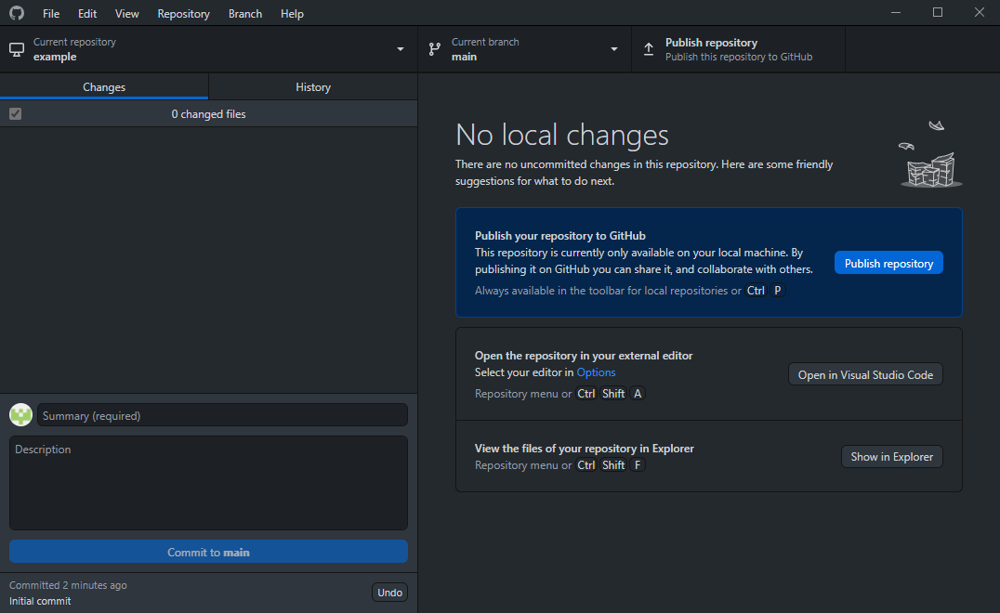

Synchronization
Now that you've gotten through the basics, it's time to get to what makes Git so useful.
Git remote
Git repositories are able to contain references to other repositories, and git remote is how you manage these connections. Rather than being direct links to other repositories, these connections can be thought of as bookmarks. They act as shortcuts so that the complete URL is not required for every command involving a remote repository.
Primarily, the git remote command provides a way to interact with a repository's ./.git/config file. Using the command as is will list all connections made to other repositories. Using the verbose option git remote -v will include the urls.
Creating, modifying, and removing connections
Making a connection to another repository is as simple as running the following command: git remote add <name> <url>. Afterwards, the parameter used for <name> can be used as a shortcut to the URL.
Similarly, git remote rm <name> can be used to remove a connection, and git remote rename <old-name> <new-name> will rename a connection.
Using connections
After creating a remote, its name can be used as an argument to other Git commands, such as git fetch or git push.
In order to download the changes that others have made to your repository, the git fetch <remote> command can be used to fetch all commits and files from the remote repository. However, this command will not actually update your working copy. Instead, Git will store these changes in your repository's ./.git/objects directory, waiting for you to merge them in.
Instead, you can use the git pull <remote> command to do both at once, erasing any uncommitted and in progress work in the process.
On the other hand, git push <remote> <branch> is how you upload your changes so that others can fetch them.
GitHub Desktop
This process is heavily streamlined in GitHub's Desktop app, allowing anyone to sync their repository with just a few button presses.
If you haven't uploaded your repository to GitHub yet, then Desktop should look similar to this. Note the "Publish repository" button in the top right.
{kind=link}
After you have uploaded your repository, that button will say "Fetch origin", which behaves just like the command. If you've made commits that aren't uploaded yet, it will instead say "Push origin".